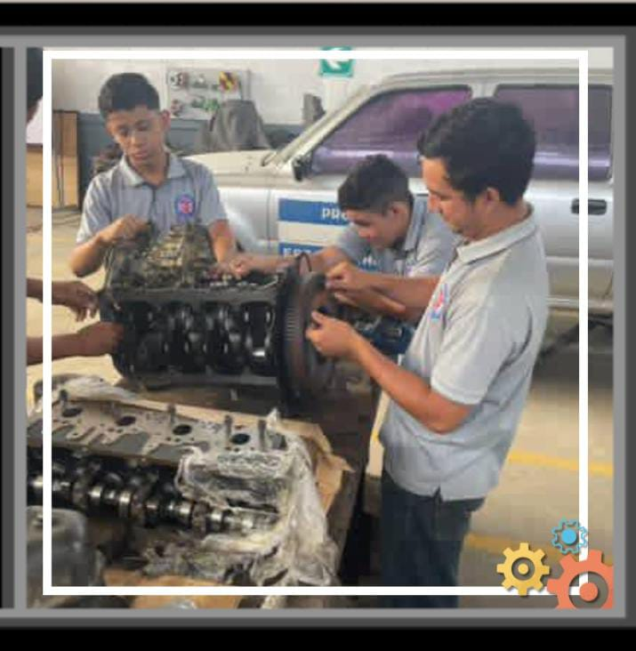
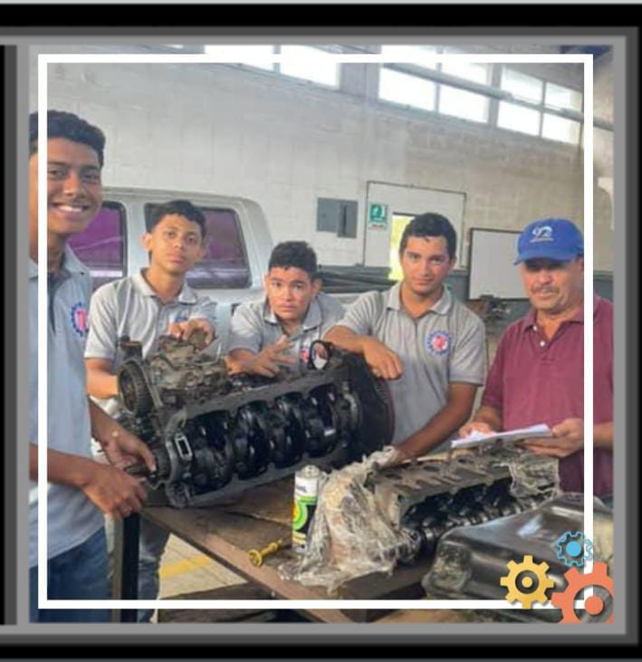

Oportunidades Laborales
Los egresados de la carrera de Bachillerato Tecnico en Mecanica Automotriz (BTPMA) tienen diversas oportunidades laborales en el campo de la mecanica automotriz. Algunas de las posibles salidas profesionales incluyen:
-
Talleres de Reparacion y Mantenimiento
Trabajar en talleres mecanicos, realizando reparaciones, mantenimiento preventivo y diagnostico de vehiculos.
-
Concesionarios de Vehiculos
Desempeñarse en concesionarios, brindando servicios de mantenimiento y reparacion a los clientes.
-
Empresas de Transporte
Trabajar en empresas de transporte, asegurando el buen estado y funcionamiento de la flota vehicular.
-
Fabricantes de Vehiculos
Participar en la produccion y ensamblaje de vehiculos en empresas fabricantes.
-
Emprendimiento Propio
Abrir un taller mecanico propio o brindar servicios de reparacion a domicilio.

Perspectivas de Crecimiento
El campo de la mecanica automotriz ofrece oportunidades de crecimiento profesional, como la especializacion en areas especificas (sistemas electricos, diagnostico computarizado, etc.), la posibilidad de asumir roles de supervisión o gerencia en talleres y empresas, y la oportunidad de continuar estudios superiores en ingenieria automotriz o campos relacionados.

Habilidades Adicionales
Ademas de las oportunidades laborales, los egresados de BTPMA desarrollan habilidades tecnicas y conocimientos en areas como diagnostico computarizado, sistemas electricos y electronicos, gestion de calidad y atencion al cliente, lo que les permite adaptarse a las demandas del mercado laboral y crecer profesionalmente.